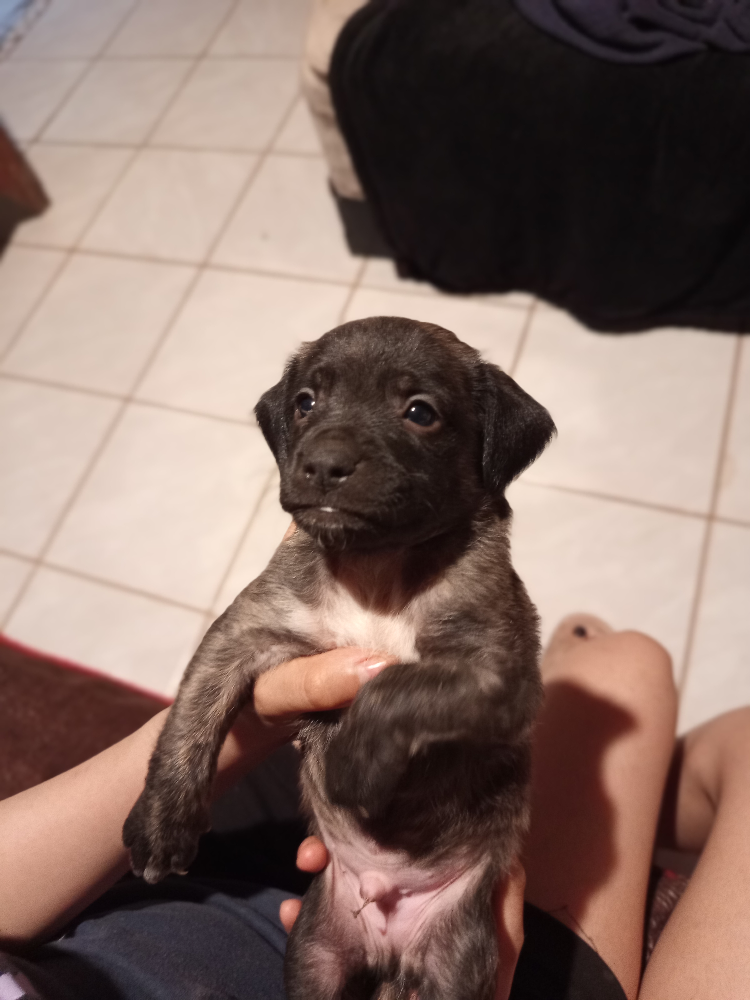
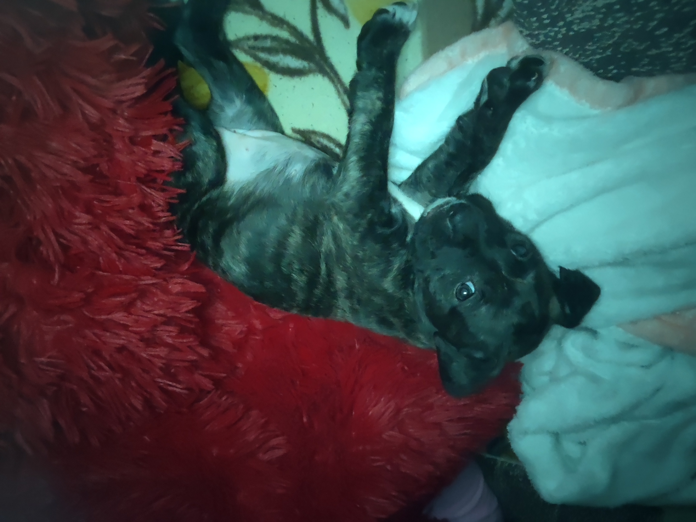
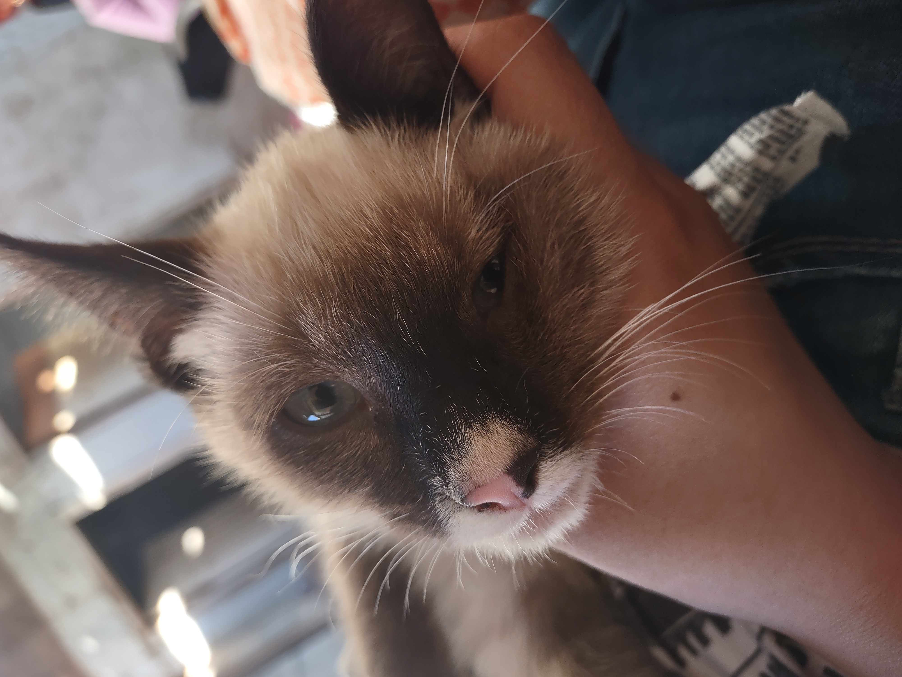
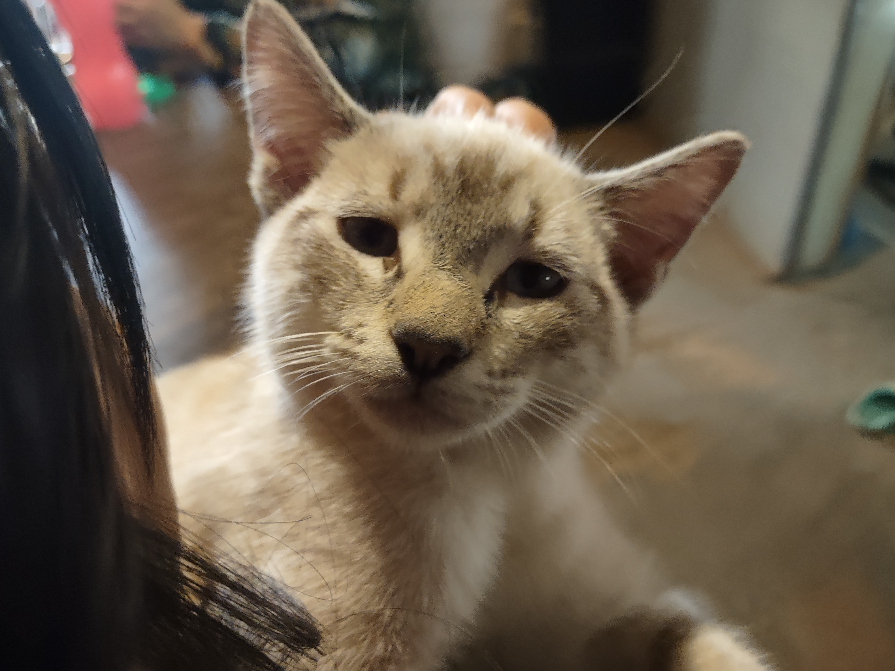

Animales en adopción
Conoce a algunos de los animales que buscan una familia responsable que pueda brindarles cariño, cuidado y un hogar.

Max
Edad: 1 mes
Sexo: Macho
Tamaño: Pequeño
Carácter: Suele ser muy amigable y juguetón. Le encanta que lo esten cargando y le den mimos

Maki
Edad: 3 meses
Sexo: Hembra
Tamaño: Pequeña
Carácter: Es muy cariñosa y activa. Le encanta morder y que jueguen con ella.

Gary
Edad: 1 año
Sexo: Macho
Tamaño: Mediano
Carácter: Es muy tranquilo. No suele gustarle mucho que lo toquen o que lo carguen, prefiere estar solo.

Kitty
Edad: 1 años
Sexo: Macho
Tamaño: Mediano
Carácter: Es demasiado mimado. Le encanta que lo carguen y le den mucho cariño, ademas de que le encanta subirse encima de las personas.
¡Adoptar es darle una segunda oportunidad a un animal!